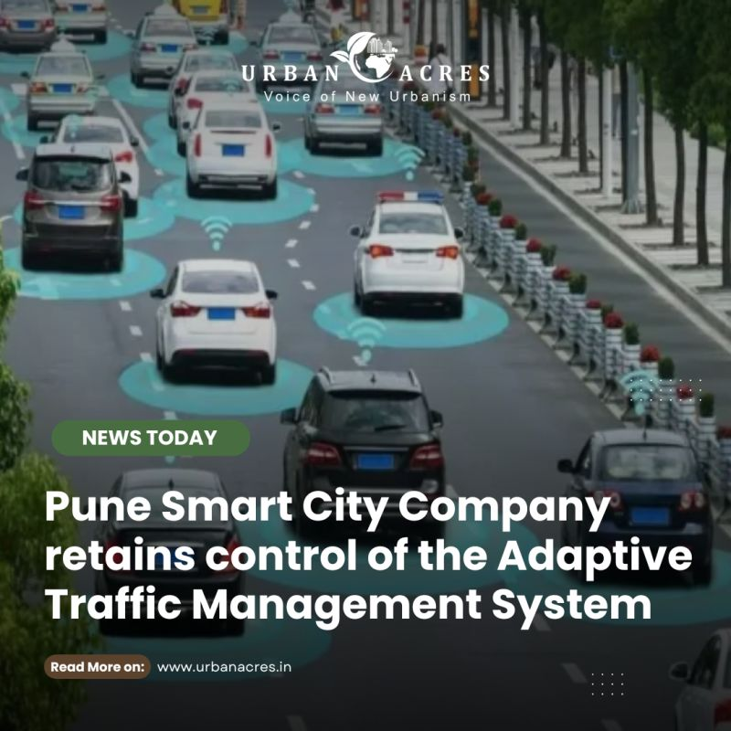
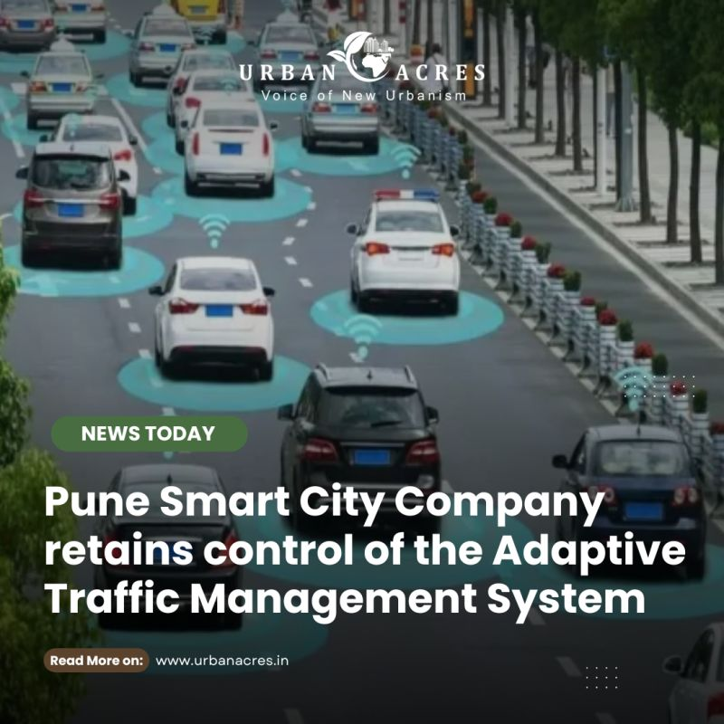
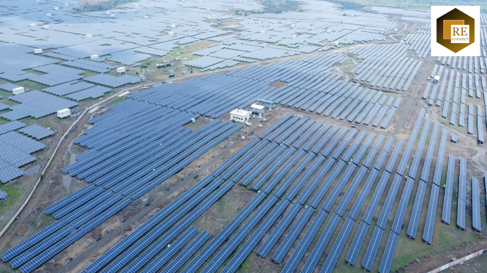
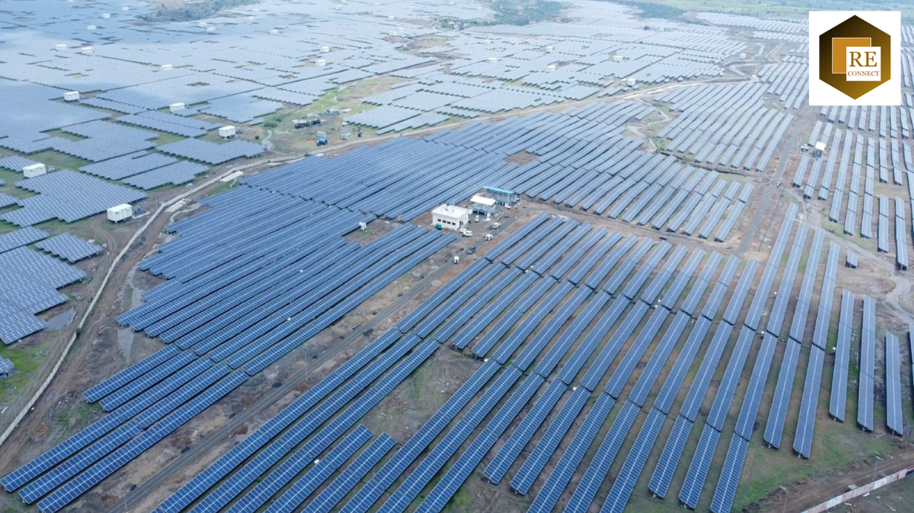

Majesty of Maharashtra
Introduction to Maharashtra
Maharashtra is located in western India and stands as the country's economic powerhouse, contributing approximately 15% to India's total GDP.
With 11+ crore people speaking diverse languages, Maharashtra beautifully connects North and South India, making it truly the heart of our nation.
Maharashtra has a rich history and is known for its vibrant culture and traditions. The state is home to diverse communities living together in harmony.
It is a land of great opportunities where people work hard and achieve their dreams. Maharashtra continues to lead India in progress and development.

Why Maharashtra Matters
- Leads the nation with 15% of India's GDP, making it the country's undisputed economic powerhouse.
- Home to the financial capital, Mumbai, which runs India's economy with the RBI, BSE, and NSE.
- Attracts the most foreign investment (FDI), making it the #1 choice for global companies.
- A leader in IT, car manufacturing, and Bollywood, setting trends for the world.
- Its major ports in Mumbai (like JNPT) and top-class transport network handle a huge share of India's trade.
- Builds India's future with modern infrastructure, new smart cities, and better urban planning.
- Shows 'unity in diversity' with over 11 crore people, representing the true spirit of modern India.
The Warrior King's Legacy
Chhatrapati Shivaji Maharaj
From a young boy who captured his first fort at just 15, to becoming the founder of the Maratha Empire, Shivaji Maharaj was more than a king — he was a visionary leader who changed the course of Indian history.
He built a strong navy, promoted fair governance, and proved that Indians could rule themselves with honour, justice, and pride.
His belief in "Swarajya" (self-rule) became the heartbeat of Maharashtra and later inspired India's freedom struggle.
His legacy of 'Swaraj' (Self-Rule) and courage forms the very foundation of Maharashtrian pride and identity to this day.


Maharashtra's Amazing Transformation
THE ANCIENT LAND (300 BCE)
From timeless wonders like the Ajanta & Ellora caves, this land was ruled by great dynasties long before modern India.
THE WARRIOR'S SPARK (1600s)
Shivaji Maharaj forged the Maratha Empire, sparking a new identity of 'Swaraj' (Self-Rule) and building a legacy of pride.
THE INDUSTRIAL ENGINE (1800s)
The rise of Bombay as a global cotton and trade hub built the foundation for India's entire modern economy.
THE GLOBAL POWERHOUSE (Today)
Now India's richest state, it's a world leader in IT, finance, and technology, defining the nation's future.
The Beautiful Marathi Culture
A rich blend of timeless traditions, vibrant festivals, and deep-rooted values.
LANGUAGE & LITERATURE
Marathi is a 'Classical Language' with a 1000-year history of poetry and literature, starting from great saint-poets like Sant Dnyaneshwar.
FESTIVALS & JOY
Led by the world-famous Ganesh Chaturthi, festivals like Gudi Padwa and Navratri unite millions in massive celebrations of music, dance, and joy.

PEOPLE & VALUES
A culture of 11+ crore people built on 'Atithi Devo Bhava,' meaning 'Guest is God.' This foundation values hard work, education, and deep respect for all.
Maharashtra: India's Tech Engine
The state that doesn't just power India's economy — it codes, builds, and engineers the nation's digital future.
Hosting the core infrastructure that powers Digital India.
Driving the nation's tech economy and global software presence.
The launchpad for innovation and the heart of India's startup ecosystem.
Maharashtra: India's Data Capital
Every byte, every click, every message — most of India's digital life runs through Maharashtra.
NATION'S DATA HUB
With over 60% of India's data centers, Maharashtra is the digital heart that keeps the country online. From Mumbai to Navi Mumbai, massive server farms store and process the data behind India's banks, apps, and businesses.
WHERE YOUR DATA LIVES
Every time you stream, chat, or pay online — there's a good chance it passes through this state. Your WhatsApp, YouTube, and UPI transactions are secured in world-class facilities spread across Maharashtra.
TRUSTED BY TECH GIANTS
Global companies — from Amazon Web Services and Google Cloud to Microsoft and IBM — run key data operations here. These centers handle millions of secure transactions every second, making Maharashtra the safest vault of India's digital economy.
Maharashtra: Heart of India's Software
BUILT IN MAHARASHTRA
Many popular Indian apps (like Paytm, Zomato) and essential software you use daily are developed right here.
THE HEART OF YOUR DIGITAL LIFE
Housing 700+ tech companies, Maharashtra builds the software managing your daily life – from the banking apps processing your payments to the systems securing your personal data.
DRIVING CRITICAL SYSTEMS
Essential services like banking software and key Digital India projects depend heavily on the software built within Maharashtra.
Smart Maharashtra: Smarter Tomorrow
Maharashtra isn't just building cities — it's shaping the future of urban India.
-
SMART MOBILITY & INFRA
In Pune, people travel smarter with cashless buses and digital passes. Thane and Nashik use smart road sensors that track traffic and reduce jams — saving time and fuel for millions. Every upgrade makes daily life smoother and more connected.
-
GREEN & SUSTAINABLE LIVING
Nagpur runs on electric buses and green energy, cutting pollution across the city. In Nashik, smart waste systems turn garbage into energy and promote cleaner neighbourhoods. From solar lights to eco-friendly homes, Maharashtra is proving that growth can stay green.
-
DATA-DRIVEN GOVERNANCE
Over 20 cities now run under the Smart City Mission, using apps and sensors to monitor air, traffic, and public safety in real time. These tools make local governance faster, fairer, and easier for everyone.
 

The Future is Made in Maharashtra
Maharashtra isn't waiting for the future — it's already building it.
THE INNOVATION STATE
Across the state, AI labs, EV factories, and robotics startups are turning bold ideas into real change. From Pune's tech parks to Nagpur's EV corridors and Mumbai's FinTech boom, Maharashtra is shaping the next decade of India's economy.
TOWARDS 2030
By 2030, Maharashtra aims to be India's most advanced state in technology, clean energy, and digital governance. Smart cities, solar highways, and digital schools are already transforming how people live, learn, and work.
THE ENGINE OF TOMORROW
With 60% of India's data centers, thousands of startups, and one of the country's most skilled workforces, Maharashtra continues to power India's digital and industrial revolution. Every new innovation here — from automation to electric transport — defines how India will move forward.
Where tomorrow is being built today.
Bollywood: Maharashtra's Creative Powerhouse
Beyond driving India's tech future, Maharashtra is also its creative engine. Mumbai, the movie magic capital, produces over 1000 films every year – more than 3 movies daily!
Film City in Goregaon is a massive hub where entire sets are built, bringing stories to life.
Bollywood is a huge industry, generating ₹18,000 crore annually and employing over 10 lakh people, from spot boys to superstars.
Even Bollywood is embracing the future: Film City's upgrade includes AI studios and virtual reality, blending technology with storytelling.
The Heartbeat of Celebration
A land where joy and tradition unite in spectacular festivals.
GANESH CHATURTHI
The state's grand 10-day spectacle. The air fills with music, dance, and devotion in a massive celebration of joy.
GUDI PADWA
Marking the Maharashtrian New Year, families raise the 'Gudi' (victory flag) to welcome prosperity and new beginnings.

DIWALI: THE FESTIVAL OF LIGHTS
A dazzling celebration where homes glow with lights, families share sweets, and the night sky sparkles with joy.
A Taste of Maharashtra
From fiery street food to timeless traditional feasts.

THE KING OF STREET FOOD
The iconic Vada Pav. A spicy potato fritter in a soft bun, it's the delicious, on-the-go meal that fuels the entire state.
THE TRADITIONAL SWEET
Puran Poli, a beloved sweet flatbread. Stuffed with a delicious mix of jaggery and lentils, it's a festive favorite in every home.

THE SPICY POWERHOUSE
Misal Pav. A fiery and savory curry of sprouts, topped with crunchy farsan. It's a breakfast that truly awakens the senses.
Maharashtra: A Traveller's Dream
THE COASTAL VIBE
From Marine Drive to the pristine Konkan coast, the state offers 720km of beautiful shoreline.
THE MISTY HILLS
Escape to lush green hill stations like Lonavala, Mahabaleshwar, and Matheran for a relaxing getaway.
THE ANCIENT WONDERS
Step back in time at the world-famous Ajanta & Ellora Caves, a UNESCO World Heritage site.
THE SPIRITUAL HEART
Find peace at holy sites like the Shirdi Sai Baba Temple and Trimbakeshwar in Nashik.
The Soul of Maharashtra: Art, Craft & Music
Every colour, every beat, every thread — tells the story of Maharashtra's spirit.
TIMELESS WARLI ART
Born in the tribal villages near Palghar, Warli art is one of India's oldest art forms. With just white paint on mud walls, it captures daily life — farming, dancing, and celebrating — in simple shapes that speak louder than words.
THE WOVEN GOLD: PAITHANI
From the town of Paithan comes the legendary Paithani saree, woven with pure silk and gold thread. Each piece takes months to make and shines with peacock and lotus designs — a living symbol of Maharashtrian elegance.


THE ENERGY OF LAVANI
No celebration is complete without Lavani — the dance of rhythm and confidence. Performed with powerful expressions and dholki beats, Lavani brings together music, theatre, and storytelling in the most energetic way possible.
The Land and Its Foundations
Maharashtra isn't just one land; it's three worlds in one. It stretches from the rugged, fortress-like Sahyadri mountains to the sun-drenched 720 km Konkan coastline.
In between lies the vast, fertile Deccan Plateau—the state's core. This powerful geography is the unseen hero of Maharashtra's story.
It provides the rich, black soil for an agricultural powerhouse and the solid ground that anchors India's mightiest industries.
The Agricultural Powerhouse
Feeding millions and powering Maharashtra's economy — from farms to global markets.
-
A LEADING PRODUCER
Maharashtra ranks #1 in India for crops like grapes, onions, pomegranates, and sugarcane. Farming here isn't small-scale — it's an organised, high-yield system that supports both local needs and exports.
-
THE FRUIT & WINE BOWL
Nashik, known as the Wine Capital of India, produces more than 80% of India's wine. The state's famous Nagpur oranges and Alphonso mangoes are exported to countries across Asia, Europe, and the Middle East.
-
THE COTTON BELT
Regions like Vidarbha and Marathwada form India's major cotton zone. The fertile black soil here feeds the nation's textile mills and supports thousands of farming families.

The Industrial Juggernaut
From global car factories to the pharmacy of the nation — Maharashtra drives India's industrial power.
Known as the Detroit of India, the Pune–Chakan belt is home to major manufacturers like Tata Motors, Volkswagen, Mercedes-Benz, and Bajaj Auto. It produces lakhs of vehicles every year for India and the world.
A huge part of India's medicines and vaccines come from Maharashtra's pharma zones in Pune, Nashik, and Aurangabad. The state played a key role in supplying vaccines during the COVID-19 pandemic.
Maharashtra alone contributes about one-fourth of India's total manufacturing output, covering everything from chemicals and electronics to textiles and machinery.
Connecting Maharashtra: The Arteries of Growth
The world-class network that keeps Maharashtra — and India — moving forward.

THE GATEWAY TO INDIA
Maharashtra's coastline is home to JNPT (Jawaharlal Nehru Port) — India's largest and busiest container port. It handles nearly 50% of the country's container cargo, linking Indian trade to markets across Asia, Europe, and Africa.
THE EXPRESSWAY NETWORK
The Mumbai–Pune Expressway, India's first, set the benchmark for modern highways. Now the Samruddhi Mahamarg, a 701-km expressway between Mumbai and Nagpur, is cutting travel time from 16 hours to just 8 — boosting trade and tourism across the state.
MODERN URBAN TRANSIT
Cities like Mumbai, Pune, and Nagpur are building massive Metro Rail networks to handle millions of passengers every day. Nagpur became India's first fully solar-powered metro, showing how Maharashtra combines speed with sustainability.
Powering the Juggernaut
The energy and resources that keep Maharashtra growing every single day.
-
PIONEERING NUCLEAR ENERGY
Maharashtra has India's first nuclear power plant — the Tarapur Atomic Power Station, set up in 1969. It still supplies electricity to many states and plays a key role in India's nuclear power network.
-
THE MINERAL WEALTH
The Vidarbha region has rich reserves of coal, manganese, and iron ore. These minerals support Maharashtra's steel, cement, and power industries, making it one of India's top industrial states.
-
THE RENEWABLE FUTURE
The state is investing heavily in solar and wind energy projects. Large solar parks in Dhule and wind farms in Satara and Sangli are helping Maharashtra move towards clean, green power.
 

Maharashtra's Firsts: Where India Began
A land that didn't just follow history—it started it.
INDIA'S FIRST TRAIN (1853)
India's entire railway journey began with the first passenger train from Mumbai to Thane.
INDIA'S FIRST BANK (1840)
The Bank of Bombay was founded here, laying the groundwork for India's entire financial system.
INDIA'S FIRST FILM (1913)
Dadasaheb Phalke produced 'Raja Harishchandra' in Maharashtra, giving birth to Indian cinema.
ASIA'S FIRST ENGG. COLLEGE
The College of Engineering, Pune (COEP) was founded in 1854, pioneering technical education in Asia.
The Land of Legends
Giants who shaped India's society, sports, and industry — all born from Maharashtra's soil. Their work didn't just inspire people; it built the foundation of modern India.
DR. B.R. AMBEDKAR
The chief architect of the Indian Constitution — a reformer, economist, and the voice of equality. Born in a humble family in Mhow, he rose to become one of India's greatest minds. His vision of justice, education, and human rights continues to guide the nation's progress.
SACHIN TENDULKAR
The God of Cricket. From the lanes of Mumbai to the biggest stadiums on Earth, he carried the dreams of a billion Indians on his shoulders. His dedication, discipline, and humility turned him into more than a sportsman — he became a national emotion.
J.R.D. TATA
The father of Indian aviation and one of the country's most respected industrialists. He founded Air India, expanded the Tata Group, and introduced a culture of innovation and integrity in Indian business. Under his leadership, Maharashtra became a hub of enterprise, ambition, and excellence.
Legends aren't born everywhere — they're made in Maharashtra.
The Knowledge Capital: Shaping Minds
Maharashtra has always been the land of learning — where education meets innovation.
-
THE ROOTS OF EXCELLENCE
The state is home to Asia's oldest engineering college, COEP Pune, founded in 1854, and some of India's earliest universities in Mumbai and Nagpur. For over a century, students from all over India have come here to study, grow, and build their future.
-
THE MODERN MINDSET
Today, Maharashtra leads with top institutes like IIT Bombay, TIFR, Symbiosis, and SPPU Pune, shaping thinkers, engineers, and leaders for a global India. Its cities are known for their education-driven culture, where learning is not just about degrees — it's about ideas and action.
-
THE FUTURE OF KNOWLEDGE
By 2030, Maharashtra aims to be India's biggest education and research hub, blending traditional values with digital learning and smart campuses.


The Spirit of Maharashtra: Ever Forward
A land that honours its past and builds the nation's future.
-
THE DRIVE TO LEAD
It was in Maharashtra that India's first train ran from Mumbai to Thane in 1853, and where the Bombay Stock Exchange (BSE) began trading in 1875, still driving India's financial heartbeat today.
-
THE SPIRIT OF INNOVATION
Maharashtra launched Indian cinema with Dadasaheb Phalke's first film studio in Nashik in 1913, and India's first cotton mill in Mumbai, laying the foundation for the country's industrial rise.
-
THE VISION FOR TOMORROW
By 2030, Maharashtra is set to become India's most developed state in technology, clean energy and digital innovation, actively building a smarter, stronger nation.
Jai Maharashtra — Forever Forward.